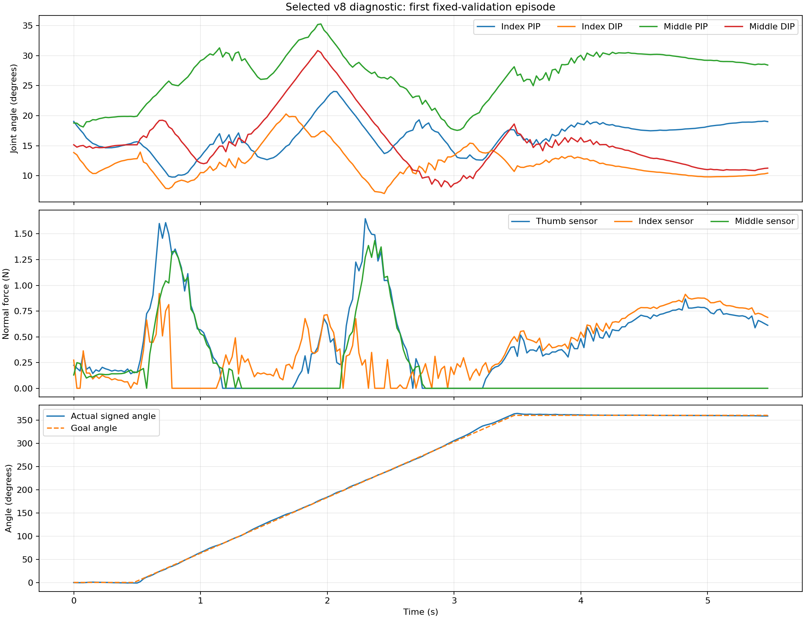
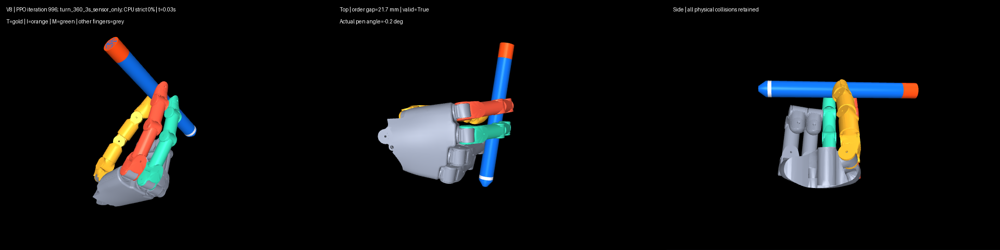
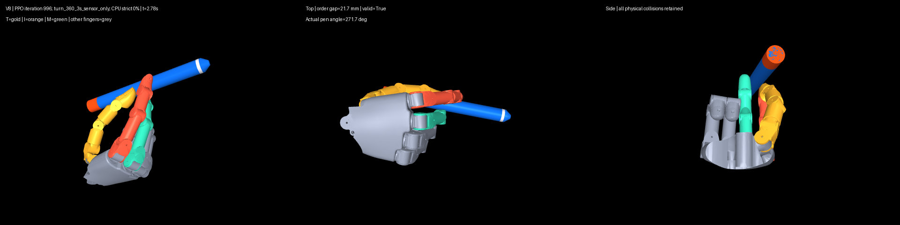
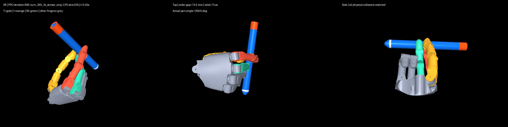

真人参考：已批准示范
参考
独立真人参考片段；未经时间与相位标定，不代表当前策略已经达到同样动作。
20 分钟短试验完成。最终第 996 轮 24/24 完成短回合，但保守 sensor-only 严格门槛 0/24；中途第 300 轮还有 3 次提前结束。所有策略片段均为真实 CPU rollout，三视角无循环。真人动作对齐和真实指腹区域仍待审阅；尚未进入长时训练。
参考
独立真人参考片段；未经时间与相位标定，不代表当前策略已经达到同样动作。
失败
原权重、保留旧策略输入，v8 sensor-only 严格通过 0/24；5.5 秒完成 24/24。接触代理不等同于真实指腹。
仅诊断
实际 CPU 策略 rollout，同一时间步的三视角；5.5 秒完成 24/24，sensor-only 严格通过 0/24。自然指腹、释放交接和动作一致性待人工审阅；不可升格为连续转笔成果。
失败
实际 CPU 策略 rollout；仅 21/24 完成 5.5 秒，严格通过 0/24。保留早停、姿态和末端重抓取失败证据。



